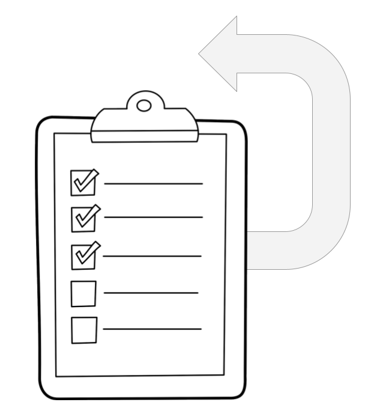

Harmonogram otevírání dat
- Seznam datových sad k otevření obvykle obsahuje více
položek, přičemž často není nutné zveřejňovat vše najednou.
- Harmonogram určuje priority a
poskytuje informaci, kdy lze očekávat zveřejnění kterých
datových sad.
- Harmonogram sestavuje
Koordinátor otevírání dat ve spolupráci s Kurátory dat.
Postup přípravy harmonogramu otevírání dat
- Kurátoři dat odhadnou pracnost otevření datových sad, které
vybrali k otevření.
- Doporučujeme pásmový odhad pracnosti,
např.:
- nízká pracnost
- do 1 pracovního dne
- střední pracnost
- do 1 pracovního týdne
- vysoká pracnost
- více než 1 pracovní týden
Tvorba harmonogramu – setřídění seznamu datových sad
Koordinátor otevírání dat setřídí seznam datových sad dle
jejich priority:
- Prioritu určí s ohledem na pracnost a
na výsledky analýzy přínosů a rizik otevření datové sady.
- Nejvyšší prioritu mají datové sady s
nízkou pracností, nejvyššími přínosy a nejnižšími riziky.
- Koordinátor otevírání dat může s
Vedením organizace komunikovat, jaké jsou preferované přínosy a
nejobávanější rizika.
Tvorba harmonogramu – setřídění seznamu datových sad
- Koordinátor otevírání dat každé datové sadě
přiřadí s ohledem na priority datum, ve kterém bude otevřena.
- Není nutné pracovat s celou škálou
termínů – postačí, když si zvolí 2 termíny, např. za 1 měsíc a
za 6 měsíců, a každé datové sadě dá buď jedno z těchto dat, nebo
uvede obecnější informaci, že ke zveřejnění dojde později – u
těch datových sad, u kterých nelze v současnosti určit přesné
datum.
Tvorba harmonogramu – schválení
- Seznam datových sad spolu s jejich popisem, přínosy, riziky a
tím, jak budou ošetřeny, a harmonogramem je Koordinátorem
otevírání dat postoupen Vedení organizace.
- Schválení tohoto seznamu, případně
jeho vrácení k přepracování a předložení upravené verze je
druhým uplatněním role Vedení organizace v procesu otevírání dat.
Doplnění technických informací o datových sadách
- K tomu, abychom získali Publikační plán, je zapotřebí
doplnit atributy, které se týkají technických aspektů otevřených
dat, ty však nejsou z pohledu Vedení organizace klíčové.
- K jednotlivým datovým sadám tedy
ještě doplníme informaci o zvoleném datovém formátu.
Zveřejnění publikačního plánu I.
- Po schválení publikačního plánu jej lze zveřejnit.
- Zveřejnění publikačního plánu
zajišťuje Koordinátor.
- Není nutné zveřejňovat kompletní
plán, některé části je možné vynechat. Jedná se např. o rizika a
jejich ošetření.
- I publikační plán samotný může být
zveřejněn jako OD.
Zveřejnění publikačního plánu II.
- Postačující rozsah ke zveřejnění: tabulka se seznamem datových
sad určených k otevření s atributy: název, popis, Kurátor dat
spolu s plánovaným datem otevření.
- Zveřejněním publikačního plánu
organizace deklaruje svůj závazek v oblasti otevírání dat.
Implementace publikačního plánu
Na implementaci publikačního plánu se podílejí téměř všechny
role:
- Koordinátor otevírání dat,
- Kurátoři dat,
- Správce katalogu,
- IT specialisté.
Evaluace publikačního plánu a jeho implementace
- Publikační plán a jeho implementace by měly být pravidelně,
opakovaně (např. jednou ročně) evaluovány – cílem je především
zjištění efektivity procesu otevírání dat, identifikace
případných problémů, možností reakce na ně a rovněž určení směru
dalšího otevírání dat v souladu se zájmy uživatelů otevřených
dat.
- Evaluaci provádí Koordinátor
otevírání dat.
Evaluační otázky
Evaluace by se měla zaměřit především na otázky:
- Podařilo se otevřít všechny
datové sady dle předepsaného harmonogramu?
- Pokud se některé datové sady
otevřít nepodařilo, proč?
- Podařilo se otevřít některé
datové sady nad rámec předepsaného harmonogramu?
- Existují uživatelé již otevřených
datových sad?
- Vznikly nad otevřenými datovými
sadami nějaké aplikace?
- Jaké byly náklady na otevření
datových sad?
Poznámky k evaluaci
- Evaluaci lze připojit k výroční zprávě.
- Evaluace by měla zahrnovat také
odhady nákladů na otevření datových sad (již
proto, že do procesu otevírání dat je zapojena řada pracovníků
organizace, kteří otevíráním dat strávili nemalou část svého
času).
- Koordinátor otevírání dat předává
výsledky vyhodnocení nákladů i samotnou evaluaci Vedení organizace.
Poznámka k nákladům
Náklady by měly být srovnávány s přínosy publikace – v
případě významných přínosů navrhnout např. úpravy IS s cílem
automatizovat příslušné kroky a snížit tak (personální) náklady.
Kontrolní činnost a revize publikačního plánu
- Evaluace není posledním krokem procesu otevírání dat.
- Koordinátor otevírání dat periodicky
kontroluje, že již zveřejněné datové sady jsou nadále
aktualizovány v určených datech.
- Publikační plán by měl být revidován
v pravidelných intervalech (např. rovněž jednou ročně) – při té
příležitosti může být rozšiřován o nové datové sady s cílem
zajistit jejich otevření.
Závěrečná rekapitulace tvorby publikačního plánu
Posloupnost činností při tvorbě publikačního plánu a publikace
otevřených dat je tedy následující:
- rozdělení rolí v procesu otevírání
dat a stanovení pravomoci a odpovědnosti,
- identifikace datových sad organizace,
- provedení analýzy přínosů a rizik
jednotlivých datových sad,
Závěrečná rekapitulace tvorby publikačního plánu (pokračování)
- sestavení publikačního plánu – u
každé datové sady, která má být zveřejněna, máme k dispozici
jméno kurátora, název a popis datové sady a stanovené podmínky
užití,
- stanovení harmonogramu zveřejnění
jednotlivých datových sad,
- rozhodnutí o způsobu katalogizace
datových sad,
Závěrečná rekapitulace tvorby publikačního plánu (pokračování)
- publikování datových sad,
- vyhodnocení plnění publikačního
plánu.

Konec modulu i celého kurzu
Pokračujte prosím na fakultativní závěrečný
test.